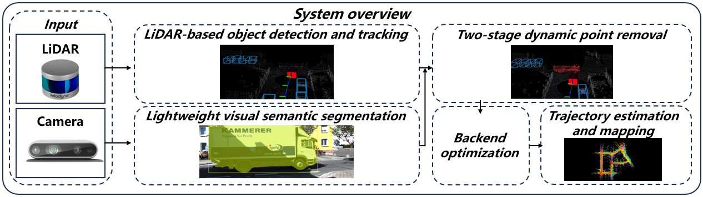
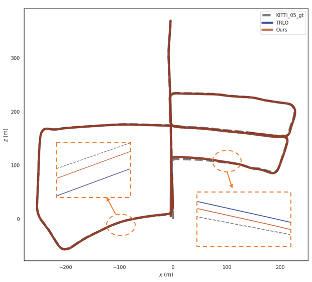
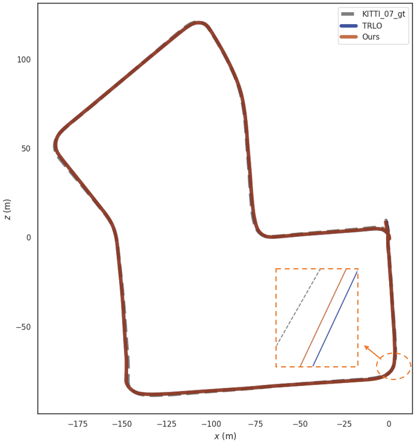
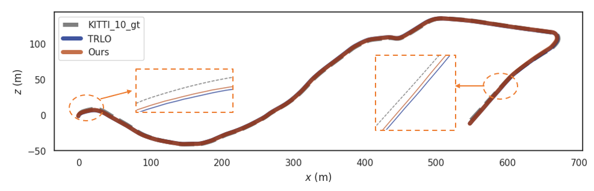
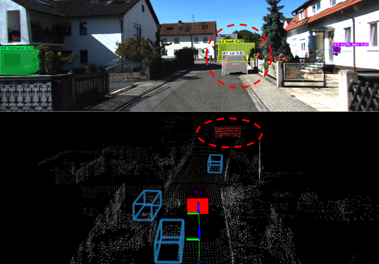
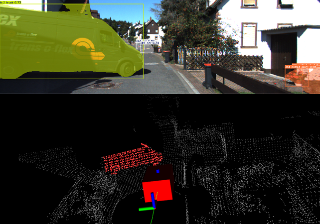
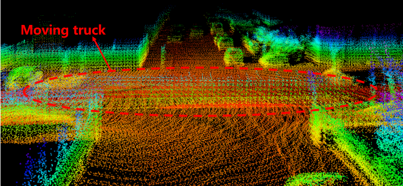
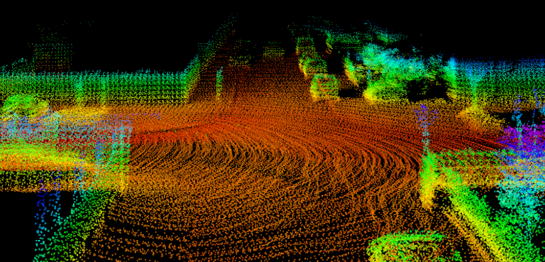

EEiSS 2026
A LiDAR Odometry with Visual Semantic Segmentation-Assisted Dynamic Object Removal
Harbin Engineering University
Oral presentation · Wuxi, China · 24–26 April 2026


Abstract
Dynamic objects can corrupt LiDAR odometry, especially when large nearby objects occlude the scene or distant objects produce sparse point clouds. Built on the TRLO framework, this work combines LiDAR-based 3D object detection and tracking with lightweight visual semantic segmentation. A two-stage strategy identifies dynamic points missed by the LiDAR detector while retaining candidate points inside detected static-object boxes. The refined point cloud is then used for ego-motion estimation. Experiments on KITTI sequences 05, 07, and 10 evaluate trajectory accuracy and mapping consistency in dynamic environments.
Method overview
Use visual semantics to refine dynamic point removal before LiDAR odometry optimization.

Detect and track
CenterPoint detects 3D objects from LiDAR scans. Tracking distinguishes moving and static objects, and points inside detected dynamic boxes are removed.
Verify with visual semantics
YOLOv8-seg identifies potential dynamic objects in camera images. Projected LiDAR points become dynamic candidates; those inside detected static boxes are retained, and the remaining candidates are removed.
Estimate ego-motion
The refined static point cloud and 3D object boxes enter the TRLO-based backend, combining scan registration, box consistency, and local z-axis constraints.
KITTI experiments
Evaluation on sequences 05, 07, and 10, without loop closure, prior maps, or external global information.
| Method | KITTI 05 | KITTI 07 | KITTI 10 |
|---|---|---|---|
| DLO* | 3.34 | 1.54 | 2.13 |
| TRLO | 2.38 | 0.93 | 2.77 |
| Ours | 2.35 | 0.91 | 2.76 |
* DLO results are taken from the TRLO paper, reference [14] in this paper.
The proposed method slightly lowers ATE relative to TRLO on all three reported sequences. It achieves the lowest error on sequences 05 and 07; DLO has the lowest error on sequence 10.



Removing missed dynamic points
Visual segmentation complements 3D detection in scenes with large occluding vehicles. The two-stage check also retains candidates inside detected static-object boxes.


Mapping consistency
The qualitative ablation compares mapping with and without visual semantic assistance. Removing residual dynamic points reduces the moving-truck artifacts visible in the map.


Qualitative comparison from Fig. 5 of the paper.
BibTeX
@inproceedings{tang2026lidar,
author = {Tang, Yiyang and Guo, Runbo and Yu, Yichen and
Zhang, Hanxuan},
title = {A {LiDAR} Odometry with Visual Semantic
Segmentation-Assisted Dynamic Object Removal},
booktitle = {2026 3rd International Conference on Electronic
Engineering and Information Systems (EEISS)},
year = {2026},
pages = {1--6},
doi = {10.1109/EEISS69782.2026.11584613}
}